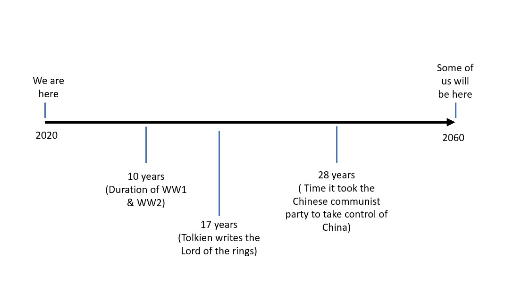

Threads.


I've just finished reading a book called "Why the West Rules - for Now" by "Ian Morris", an archeologist from Stanford University. Despite it's rather dubious sounding name the book compares social development in the East and West over the last 15000 years, hunter gatherers all the way to artificial intelligence. It's fascinating and well worth a read.
Towards the end of the book, Morris talks about the five horsemen of the apocolypse: migration, famine, war, state failure and climate change. When these horsemen ride together, as he has shown in throughout the book, empires collapse: Ancient Mesopotamia, Rome, Song Dynasty China. Written in 2010, Morris looks ahead at the coming decade and it reads as if it could have been written in 2020 looking back. The instability in the Middle East, he predicted could lead to state failure, famine and war resulting in large migrations to affluent Europe. The spectre of muslim terrorism was likley to raise it's head in Europes capitals as a result, with increased tensions between different groups of people. The likelihood of a global pandemic was ever increasing, with SARS and MERS, both zoonotic influeza viruses who jumped host, demonstrating that outbreaks are possible. Given the right circumstances, Morris predicted, a global flu virus would shatter the global economy like we've never seen it before. Of course, this is all happening in the background of the highest CO2 levels recorded for millions of years. Relatively mild climate change over the last 15000 years has finished empires. Then, of course, there's the new threats: nuclear war and Artifcial intelligence.
And what happened? Well, the Arab spring toppled many dictorial regimes and those that held to power did so through harsh rackdowns. The crackdown in Syria was so severe that it united all opposition against it, giving the most vicious group, ISIS, room to grow. The state collapse and war kicked off the Syrian Refugee Crisis, still ongoing today. ISIS attacked Europe, increasing tensions between Europeans and refugees. Coronavirus jumped from Bats to humans and, like SARS and MERS before it, spread fast around a region. This region however, was more globalised than ever, kicking off a gloabl pandemic shattering the economy. The hottest years on record keep being broken, with the arctic ice sheet on course to disappear each summer by 2040. The rise of China and the US's increasingly alarmed response is gearing up to be a second cold war, fought in the new domains of global public relations, cyberspace, and actual space. The doomsday clock is close to midnight than it has ever been:
Rather than a black swan Covid19 is an ugly duckling. It was entirely predictable, likely to happen, boring, we know about it, ok, move on. And as I try to lay out above, alot of the big existential risks are also predictable, it's a matter of when, not so much as if. Black swan events do happen, but even the finanical crash wasn't a black swan to everyone, look at the Big Short. So the question is: what are the ugly ducklings, what are the predictable, run of the mill, boring things that we can do that help navigate the next 40 years, I give ciaran 30, but he'll burn bright, of careers and life and love?
Let's look for the oppurtunities to play the high risk game when it suits us, but build the platform to play the high risks with the everyday ugly ducklings. Look how they grow up:

So I’ve been thinking. Until now, we have been very much under construction. Society has shaped us like a graduate potter with a tremor and a sense of humour. Now, having passed by way of existence, we are beginning our main contribution to reality. Naively assuming no premature deaths, this will last approximately 40 years.

If your version of reality is the same as mine, then you like feeling good. Although, feeling good is more than merely feeling good, it is a complex array of emotions all working together to give the person you identify as an overall experience that they would like to be repeated. We can assume that despite variance in the complex array of emotions each of us experience, the end goal is the same. At this point lets rule out communism, I know some of you were thinking about it.
Unfortunately, my person ( this is how I will refer to my avatar from now on, I suggest you do the same to avoid any future legal liabilities) doesn’t do altruism it does reciprocal altruism. Which means over the next 40 years there is going to have to be some give and take.
This leads me to the main point. With our intentions to improve the world a given, and us all highly educated, it seems obvious that we should manage our give and take in the most effective and prosperous way possible. Recently I heard about a book called Black Swan. Then even more recently I found a YouTube video which had a 20min summary of the key points in the book. To give an even briefer summary, a Black Swan event is one which nobody saw coming because nobody could have known( covid-19 or the great depression) and the book talks about the financial effect of these events, which can be negative or positive.
I’m not going to try explain it all here, because the video nails it, so watch it before you read on.THE BLACK SWAN SUMMARY (BY NASSIM TALEB)
I’m wondering if the hyper-conservative and hyper-aggressive approach to investing can be used in relation to our career choices. I feel like there is a force which sucks us towards mediocre jobs, like the one I had, with few upsides and few downsides. There was never any chance that I would make it to the top and yet there was no way I was doing poorly financially. Fast forward to now, taking covid as the black swan event , I lost everything. What seemed low risk, actually left me completely exposed to unseen events and this is something I am going to consider in the future. Just thought I’d share it with y’all.
Just so you know how it works, every time I add a new post it appears here. if I had more things to say and wasnt brain dead from trying to get this website to work I would mention them now but I am tired and the all is in your court.
Hello all, This is my first confession. Seems like texting is a rather useless form of longterm communication, and although I would be lost without Ciaran sending shite history memes into the group at 3 in the morning, I think I might have a better idea. in the about section ( top right) I've made a tutorial of how you guys can add content to this website. If you curious about what to add, think along the lines of - What are you doing that you would like to share with the group that takes to long to explain in a text, or what would the guys be interested in knowing. for example i would be really interested if jack wrote a piece about some cool part of architecture that none of us are aware of but he could summarize nicely, or if ali had links to some cool shit or T has some philosophical thoughts he wants to share. yes it's a blog. Just add what the fuck you like as per the tutorial